Xử lý hàng loạt - batch processing bằng Processing Framework
[ Download PDF
A4
Letter ]
QGIS 2.0 introduced a new concept called Processing Framework. Previously
known as Sextante, the Processing Framework provides an environment within
QGIS to run native and third-party algorithms for processing data. It contains
a nice batch processing interface that allows one to execute an algorithm on
several layers easily. Batch processing is a useful tool that can save manual
effort and help you automate repetitive tasks.
Tổng quan về nhiệm vụ
We will take several global vector layers and clip them to the extent of Africa
in a single batch command.
Các kỹ năng bạn sẽ học được
Nhận dữ liệu
Natural Earth có một số lớp vector cho toàn thế giới. Tải xuống các lớp sau đây
Sau khi đã tải xuống, giải nén và xuất các shapefiles vào cùng một thư mục.
Data Source: [NATURALEARTH]
Các bước thực hiện
Vào .

- Browse to the downloaded Admin 0 Countries shapefile
ne_10m_admin_0_countries.shp and click Open.
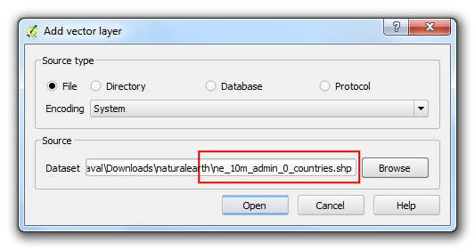
- As our task is to clip the global layers to the boundary of Africa, we need
to first prepare a layer containg a polygon for the entire continent. The
countries layer has an attribute called CONTINENT. We can use a
geoprocessing concept called Dissolve to merge all countries that have the
same continent value and merge them to a single polygon.
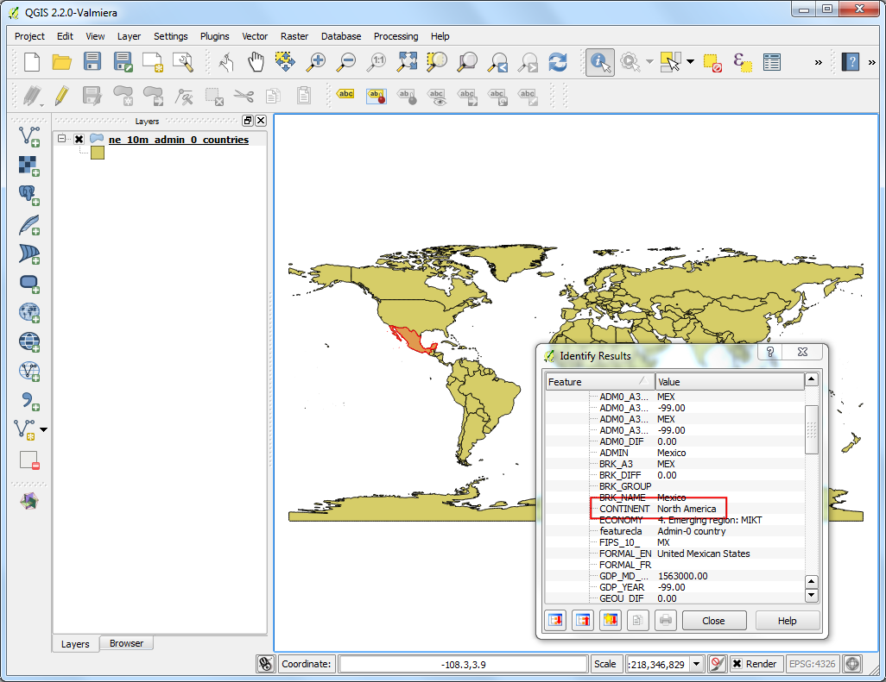
- Open the Dissolve tool from .
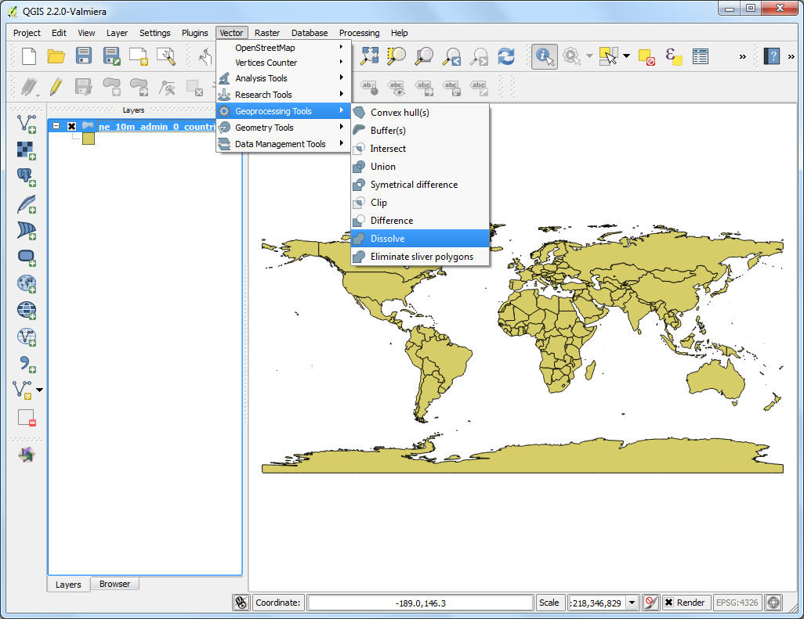
- Select ne_10m_admin_0_countries as the Input vector layer.
The Dissolve field would be CONTINENT. Name the output file
as continents.shp and check the box next to Add result to
convas.
Note
If you want to merge ALL polygons regardless of their attributes, you
can select – Dissolve All – as the Dissolve field.
This will combine all polygons in the layer and give you a single aggregate
polygon.
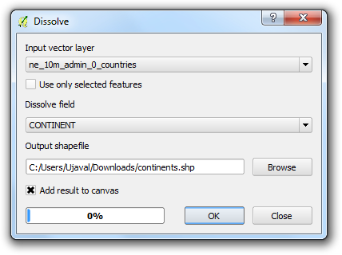
- The dissolve processing may take a while. Once the process finishes, you
will see the new continent layer added to QGIS. Use the
Select Single Feature tool from the toolbar and click on Africa
to select the polygon representing the continent.

Click chuột phải vào lớp continents và lựa chọn Save Selection As....
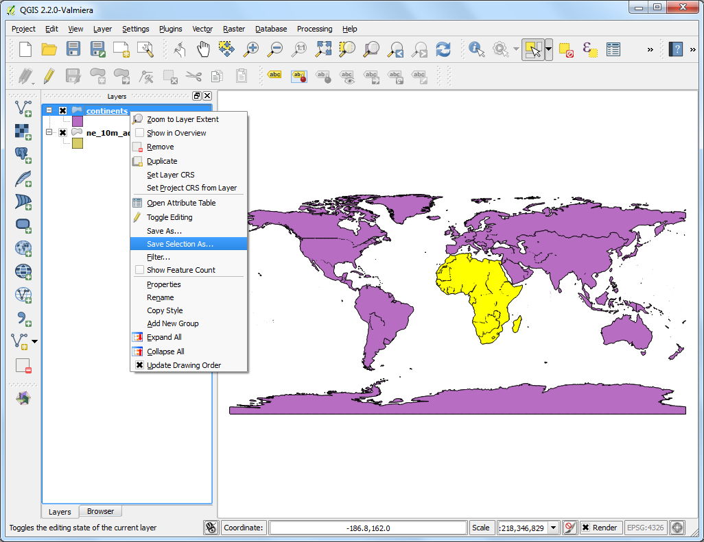
- Name the output file as africa.shp. Since we are only interested in the
shape of the continent and not any attributes, you may check the
Skip attribute creation. Make sure the Add saved file
to map box is checked and click OK.

- Now you will have the africa layer loaded in QGIS containing a single
polygon for the entire continent. Now, it’s time to start our batch clip
process. Open .
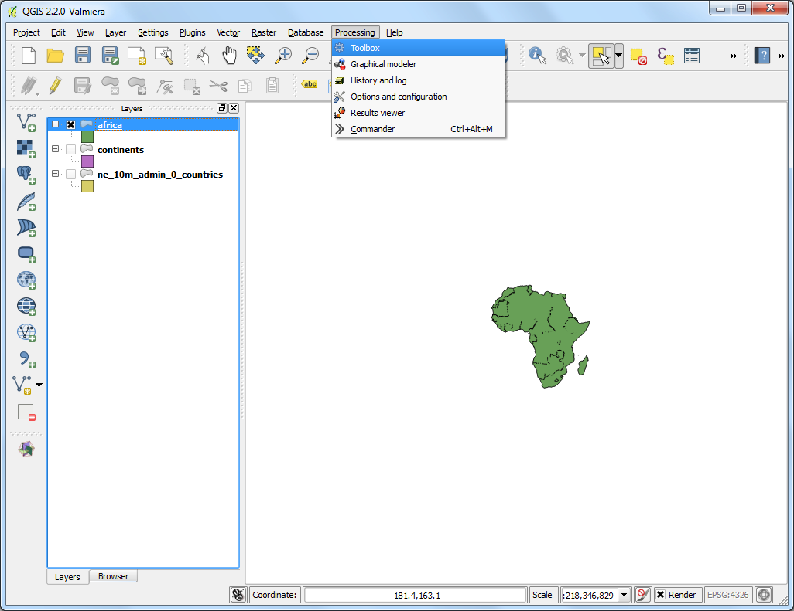
- Browse all available algorithms and find the Clip tool from
. You
may also use the Search box to easily find the algorithm as
well.

- Right-click the Clip algorithm and select Execure as
batch process.
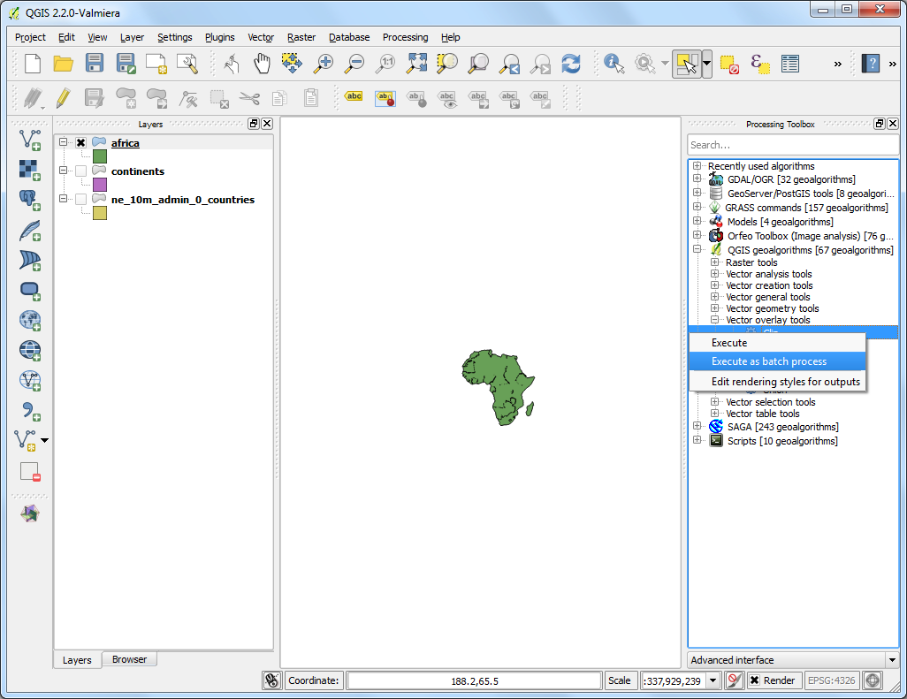
- In the Batch Processing dialog, the first tab is
Parameters where we define out inputs. Click the
... next to the first row in the Input layer column.
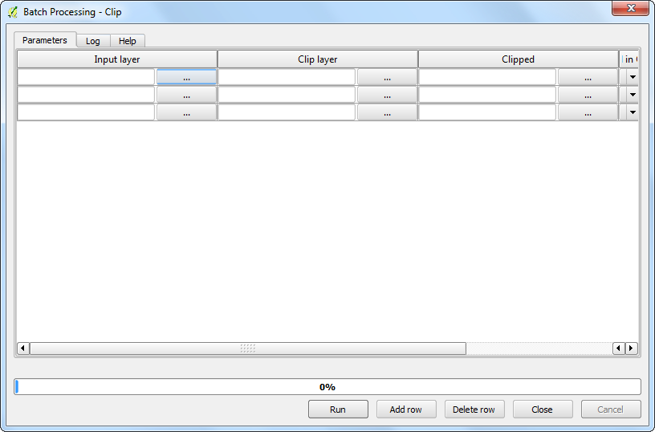
- Browse to the directory containing the global transportation layers that
you had downloaded. Hold the Ctrl key and select all the layers that
you want to clip. You may also use Shift or Ctrl-A to make
multiple selection. Click Open.

- You will notice that the Input layer columns will be
auto-populated with all layers you had selected. You may use Add
row button to add more rows and define more inputs. Next, we need to
select the layer containing the boundary to clip our input layers. Click the
... button for the first row and add the africa.shp
Clip layer. Since the clip layer is the same for all our inputs,
you can double-click the column header Clip layer and the same
layer will be auto-filled for all the rows. Next, we need to define our
outputs. Click the ... buton next to the first row in the
Clipped column.
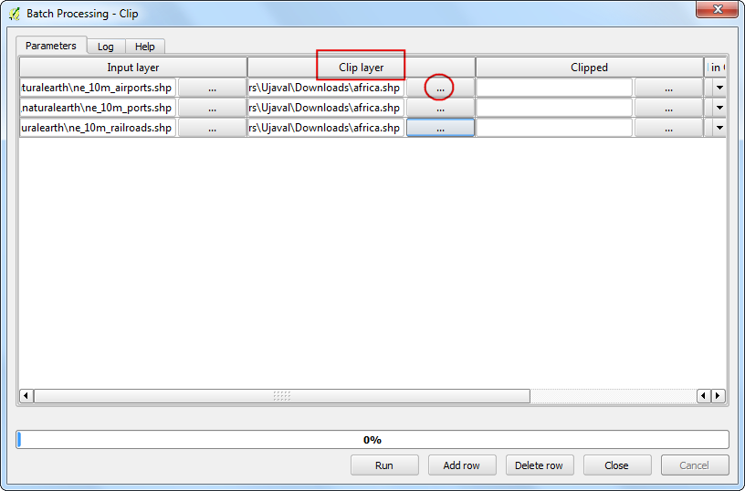
- Browse the the directory where you want your output layers. Type the
filename as clipped_ and click Save.
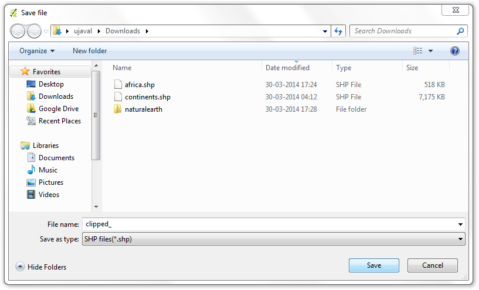
- You will see a new Autofill settings dialog pop up. Select
Fill with parameter values as the Autofill mode.
Select Parameter to use as Input layer. This
setting will add the input file name to the output along with the specified
output_ filename. This is important to ensure all the output files have
unique names and they do not overwrite each other.
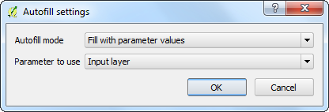
Thế là ta đã sẵn sàng chạy xử lý hàng loạt. Bấm chuôt vào Run.

- The clip algorithm will run for each of the inputs and create output files
are we have specified. Once the batch process finishes, you will see the
layers added to QGIS canvas. As you will notice, all the global layers are
properly clipped to the continent boundary that we had specified.
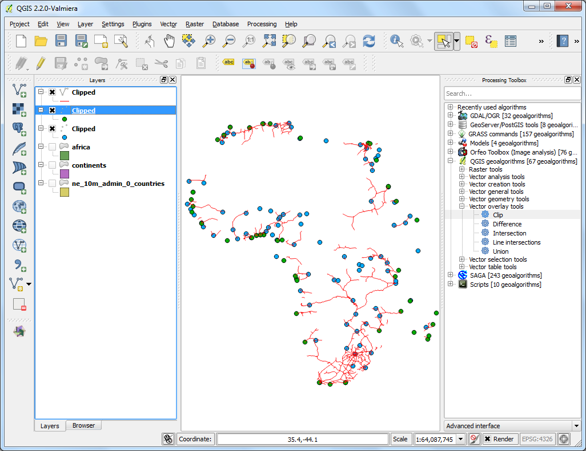